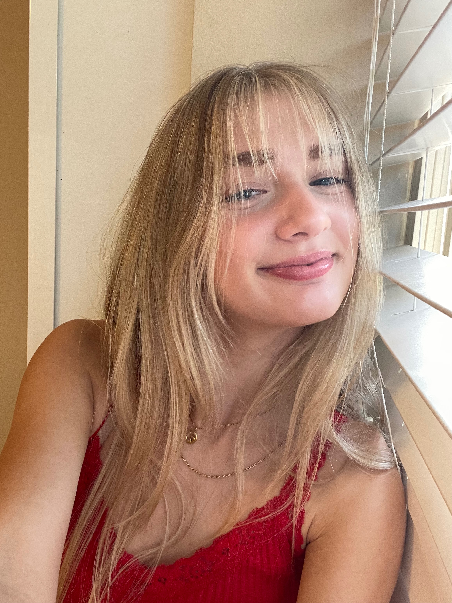
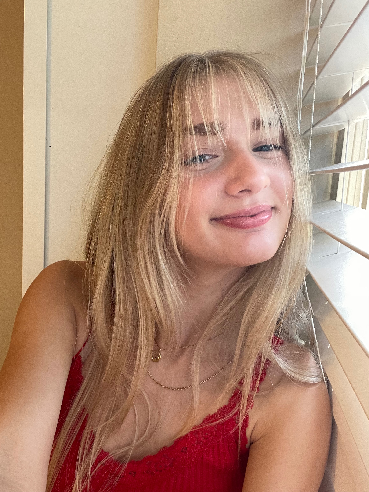

About Me
Hello, my name is Molly Anderson! I am a student at the University of Wisconsin Eau Claire and am a psychology major. Some things I love to do are volunteering, be around animals, drawing, hanging out with friends, and being creative. I am super passionate about animals and have been volunteering with a dog rescue for the past 3 years. It has been my favorite thing I have done so far in my life. During those 3 years, I have taken care of 9 foster dogs and helped them to get adopted. I have gotten very involved and have learned so much about animals and in what ways I am able to help them. I hope to continue fostering once out of college. I also have a huge passion for creativity and art. I love to draw, write, or make things in my free time.
 

Accomplishments
- Currently have a 4.0 in school
- Fostering and Rescue
- Work experience in food, customer dervice, and pet care
- Worked on social media team voluntarily
Education
I grew up in the Twin Cities in Minnesota, and graduated from Burnsville High-school in 2023. I then went on to attend University of Wisconsin River Falls the year after, where I thought through many different options for a major and career. I took a wide variety of classes including psychology, art, and animal science. After finishing off the year, I decided to transfer to UW Eau Claire to be able to explore a wider variety of majors. After taking 3 different psych classes, I finally decided to declare my major in psych. I am currently attempting to decide on a minor in business, computer science, or art.
Work Experience
So far, I have had different working experience in food and customer service, and pet care. I worked at a pizza place during my time in high school, and had a side job in lots Of pet and house sitting. Although it technically isn’t a job, I spent a lot of time and hard work working with my foster dogs and helping them to get adopted. It has given me a lot of experience working with animals, people, and social media.